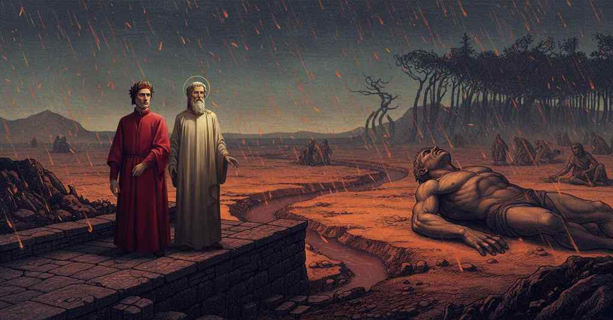

Inferno — Canto 14

1
Poi che la carità del natio loco
After love for my native place
郷土への愛が
2
mi strinse, raunai le fronde sparte
compelled me, I gathered the scattered leaves
私を捉えたので、私は散らばった葉を集め
3
e rende’le a colui, ch’era già fioco.
and returned them to him, who was already faint.
そしてそれを、すでに弱々しくなっていた者へ返した。
4
Indi venimmo al fine ove si parte
Then we came to the edge where separates
そこから我らは、分かれる境へと来た
5
lo secondo giron dal terzo, e dove
the second round from the third, and where
第二の環が第三の環から、そしてそこで
6
si vede di giustizia orribil arte.
is seen a horrible art of justice.
正義の恐るべき術が見られる場所へ。
7
A ben manifestar le cose nove,
To well manifest the new things,
新たな事柄をよく明らかにするために、
8
dico che arrivammo ad una landa
I say that we arrived at a plain
申し上げよう、我らはある荒野に到着したと
9
che dal suo letto ogne pianta rimove.
that from its bed removes every plant.
その地からはあらゆる植物が取り除かれている。
10
La dolorosa selva l’è ghirlanda
The sorrowful wood is a garland to it
痛ましい森がそれを花輪のように
11
intorno, come ’l fosso tristo ad essa;
around, as the sad ditch is to the wood;
囲んでいる、悲しい堀が森を囲むように。
12
quivi fermammo i passi a randa a randa.
there we stopped our steps at the very edge.
そこで我らは、まさしくその縁に歩みを止めた。
13
Lo spazzo era una rena arida e spessa,
The ground was an arid and dense sand,
その地面は乾いて厚い砂であり、
14
non d’altra foggia fatta che colei
made of no other fashion than that
かつてカトーの足によって
15
che fu da’ piè di Caton già soppressa.
which by the feet of Cato was once trod upon.
踏みつけられたものと異ならない作りだった。
16
O vendetta di Dio, quanto tu dei
O vengeance of God, how much you ought
おお、神の復讐よ、汝はどれほど
17
esser temuta da ciascun che legge
to be feared by each one who reads
恐れられるべきであることか、我が目に
18
ciò che fu manifesto a li occhi mei!
what was made manifest to my eyes!
明らかになった事を読む者すべてから！
19
D’anime nude vidi molte gregge
Of naked souls I saw many flocks
裸の魂たちの多くの群れを私は見た
20
che piangean tutte assai miseramente,
that all wept most miserably,
彼らは皆、ひどく惨めに泣いており、
21
e parea posta lor diversa legge.
and it seemed a diverse law was laid on them.
彼らには異なる定めが置かれているようだった。
22
Supin giacea in terra alcuna gente,
Supine on the ground some people lay,
ある者たちは地に仰向けに横たわり、
23
alcuna si sedea tutta raccolta,
some sat all huddled up,
ある者たちは皆うずくまって座り、
24
e altra andava continüamente.
and others walked continuously.
そして他の者たちは絶えず歩き続けていた。
25
Quella che giva ’ntorno era più molta,
The group that went around was more numerous,
歩き回る者たちの数が最も多く、
26
e quella men che giacëa al tormento,
and that one less which lay in torment,
苦しみの中に横たわる者たちは最も少なかったが、
27
ma più al duolo avea la lingua sciolta.
but had its tongue more loosened for wailing.
その舌は苦痛のためにより饒舌であった。
28
Sovra tutto ’l sabbion, d’un cader lento,
Over all the great sand, with a slow falling,
砂原のすべての上に、ゆっくりと落ちながら、
29
piovean di foco dilatate falde,
rained down broad flakes of fire,
広がった炎の薄片が降っていた、
30
come di neve in alpe sanza vento.
like snow in the alps without wind.
風のないアルプスでの雪のように。
31
Quali Alessandro in quelle parti calde
Like those which Alexander in those hot parts
アレクサンドロスがインドの
32
d’Indïa vide sopra ’l süo stuolo
of India saw upon his host
あの暑い地で、自らの軍勢の上に
33
fiamme cadere infino a terra salde,
flames fall, solid to the ground,
固いまま地上まで落ちる炎を見たように、
34
per ch’ei provide a scalpitar lo suolo
for which he took care to trample the soil
そのため彼は地面を踏みつけるよう備えさせた
35
con le sue schiere, acciò che lo vapore
with his squadrons, so that the flame
彼の部隊と共に、炎が一つであるうちに
36
mei si stingueva mentre ch’era solo:
was more easily extinguished while it was single:
より容易に消せるようにと。
37
tale scendeva l’etternale ardore;
such descended the eternal ardor;
そのように永遠の熱気が降っていた。
38
onde la rena s’accendea, com’ esca
whereby the sand was kindled, like tinder
そのため砂は燃え上がった、火口の下の
39
sotto focile, a doppiar lo dolore.
under flint, to double the pain.
熾のように、苦痛を倍加させるために。
40
Sanza riposo mai era la tresca
Without rest ever was the dance
休みなく続いていた、惨めな両手の
41
de le misere mani, or quindi or quinci
of the miserable hands, now here, now there
踊りが、今はこちら、今はあちらと
42
escotendo da sé l’arsura fresca.
shaking from themselves the fresh burning.
新たな灼熱を自らから払い落としながら。
43
I’ cominciai: «Maestro, tu che vinci
I began: “Master, you who overcome
私は口を開いた。「師よ、あなたは打ち負かす
44
tutte le cose, fuor che ’ demon duri
all things, except for the hard demons
すべてのものを、ただ頑なな悪魔どもを除いては、
45
ch’a l’intrar de la porta incontra uscinci,
who at the gate’s entrance came out to meet us,
門に入ろうとした我らの前に現れた者たちですが、
46
chi è quel grande che non par che curi
who is that great one who seems not to care
あの、意に介さぬように見える大いなる者は誰ですか
47
lo ’ncendio e giace dispettoso e torto,
for the fire and lies scornful and twisted,
あの炎を、そして侮蔑し、ねじくれて横たわり、
48
sì che la pioggia non par che ’l marturi?».
so that the rain does not seem to torture him?”.
雨も彼を苛んでいないかのように見える者は？」。
49
E quel medesmo, che si fu accorto
And that same one, who had become aware
するとその者自身が、私が
50
ch’io domandava il mio duca di lui,
that I was asking my guide about him,
我が導き手に彼について尋ねるのを察して、
51
gridò: «Qual io fui vivo, tal son morto.
shouted: “What I was alive, such I am dead.
叫んだ。「生きていた時の私が、死んだ私だ。
52
Se Giove stanchi ’l suo fabbro da cui
If Jove should weary his smith from whom
たとえユピテルがその鍛冶屋を疲れさせようと、
53
crucciato prese la folgore aguta
wrathfully he took the sharp thunderbolt
怒りて鋭き雷霆を手に取ったその者を、
54
onde l’ultimo dì percosso fui;
with which on my last day I was struck;
その雷で私は最期の日に撃たれたのだが。
55
o s’elli stanchi li altri a muta a muta
or if he should weary the others, shift by shift,
あるいは、彼が他の者たちを次から次へと
56
in Mongibello a la focina negra,
in Mongibello at the black forge,
モンジベッロの黒い鍛冶場で疲れさせ、
57
chiamando “Buon Vulcano, aiuta, aiuta!”,
calling ‘Good Vulcan, help, help!’,
『善きウルカヌスよ、助けよ、助けよ！』と呼びかけ、
58
sì com’ el fece a la pugna di Flegra,
just as he did at the battle of Phlegra,
フレグラの戦いで彼がしたように、
59
e me saetti con tutta sua forza:
and should shoot arrows at me with all his strength:
そして全力を込めて私を撃とうとも、
60
non ne potrebbe aver vendetta allegra».
he could not have a joyful vengeance from it”.
彼は晴れやかな復讐を得ることはできまい」。
61
Allora il duca mio parlò di forza
Then my guide spoke with such force
その時、我が導き手は力強く語った、
62
tanto, ch’i’ non l’avea sì forte udito:
that I had not heard him so loud:
私がこれほど力強い声を聞いたことがないほどに。
63
«O Capaneo, in ciò che non s’ammorza
“O Capaneus, in that it is not quenched,
「おお、カパネウスよ、汝の傲慢さが
64
la tua superbia, se’ tu più punito;
your pride, you are more punished;
消えぬことにおいて、汝はより罰せられているのだ。
65
nullo martiro, fuor che la tua rabbia,
no martyrdom, other than your own rage,
いかなる苦罰も、汝自身の怒りの他には、
66
sarebbe al tuo furor dolor compito».
would be for your fury a fitting pain”.
汝の狂乱にふさわしい苦痛とはなるまい」。
67
Poi si rivolse a me con miglior labbia,
Then he turned to me with a better lip,
それから彼はより穏やかな口調で私に向き直り、
68
dicendo: «Quei fu l’un d’i sette regi
saying: “That was one of the seven kings
言った。「あれは七人の王の一人、
69
ch’assiser Tebe; ed ebbe e par ch’elli abbia
who besieged Thebes; and he had and seems to have
テーバイを包囲した者だ。そして彼は神を
70
Dio in disdegno, e poco par che ’l pregi;
God in disdain, and little seems to prize Him;
侮り、今もなお軽んじているように見える。
71
ma, com’ io dissi lui, li suoi dispetti
but, as I told him, his own scornful acts
だが、私が彼に言ったように、その軽蔑の言葉こそが
72
sono al suo petto assai debiti fregi.
are for his breast very fitting ornaments.
彼の胸にふさわしい飾りなのだ。
73
Or mi vien dietro, e guarda che non metti,
Now come behind me, and see that you do not place,
さあ、私の後に続きなさい、そして注意して足を置かぬように、
74
ancor, li piedi ne la rena arsiccia;
yet, your feet on the burning sand;
まだ、焼けた砂地の上に。
75
ma sempre al bosco tien li piedi stretti».
but always keep your feet close to the wood”.
常に森の縁に足をぴったりとつけていなさい」。
76
Tacendo divenimmo là ’ve spiccia
In silence we arrived where gushes
黙して我らはそこへ至った、ほとばしり出る
77
fuor de la selva un picciol fiumicello,
forth from the wood a small stream,
森の外へと一本の小さな小川が、
78
lo cui rossore ancor mi raccapriccia.
whose redness still makes me shudder.
その赤色はいまだ私を身震いさせる。
79
Quale del Bulicame esce ruscello
Like the stream that issues from the Bulicame,
ブリカーメから流れ出る小川のように、
80
che parton poi tra lor le peccatrici,
which the sinful women then divide among themselves,
罪ある女たちが後にそれを分け合う、
81
tal per la rena giù sen giva quello.
so down over the sand did that one go.
そのように砂地をそれは下って流れていた。
82
Lo fondo suo e ambo le pendici
Its bottom and both its banks
その川底と両側の土手は
83
fatt’ era ’n pietra, e ’ margini dallato;
were made of stone, and the verges at the side;
石でできており、脇の縁も同様であった。
84
per ch’io m’accorsi che ’l passo era lici.
from which I realized that the path was there.
それゆえ私は、道がそこにあると気づいたのだ。
85
«Tra tutto l’altro ch’i’ t’ho dimostrato,
“Among all the other things that I have shown you,
「私がお前に示してきた他の全てのもののうちで、
86
poscia che noi intrammo per la porta
since we entered through the gate
我らが門より入って以来、
87
lo cui sogliare a nessuno è negato,
whose threshold is denied to no one,
その敷居は何人にも拒まれぬ門だが、
88
cosa non fu da li tuoi occhi scorta
nothing has been seen by your eyes
お前の目に留まったものは何一つなかった、
89
notabile com’ è ’l presente rio,
as notable as is the present stream,
この現在の川ほど注目すべきものは。
90
che sovra sé tutte fiammelle ammorta».
which quenches all the little flames above it.”
これはその身の上ですべての炎を消し去るのだ」。
91
Queste parole fuor del duca mio;
These words were from my guide;
これらの言葉は我が導き手のものだった。
92
per ch’io ’l pregai che mi largisse ’l pasto
for which I begged him to provide the meal
ゆえに私は彼に懇願した、その糧を恵んでほしいと、
93
di cui largito m’avëa il disio.
for which he had provided me the desire.
その渇望を彼が私に与えてくれたのだから。
94
«In mezzo mar siede un paese guasto»,
«In the middle of the sea lies a wasted land»,
「海の真ん中に荒れ果てた国がある」
95
diss’ elli allora, «che s’appella Creta,
he said then, «which is called Crete,
と彼はその時言った、「クレタと呼ばれる、
96
sotto ’l cui rege fu già ’l mondo casto.
under whose king the world was once chaste.
その王の下でかつて世界は潔白であった。
97
Una montagna v’è che già fu lieta
A mountain is there that once was joyous
そこにはかつて喜びに満ちた山がある
98
d’acqua e di fronde, che si chiamò Ida;
with water and with fronds, which was called Ida;
水と緑葉の、イーデーと呼ばれた。
99
or è diserta come cosa vieta.
now it is deserted like a thing forlorn.
今は禁じられた物のように寂れている。
100
Rëa la scelse già per cuna fida
Rhea once chose it for the faithful cradle
レアはかつてそこを信頼できる揺り籠として選んだ
101
del suo figliuolo, e per celarlo meglio,
of her son, and to conceal him better,
彼女の息子のために、そして彼をより良く隠すため、
102
quando piangea, vi facea far le grida.
when he cried, had clamors made there.
彼が泣く時、そこで叫び声を上げさせた。
103
Dentro dal monte sta dritto un gran veglio,
Inside the mountain stands erect a great old man,
山の内側には巨大な老人がまっすぐに立っている、
104
che tien volte le spalle inver’ Dammiata
who keeps his shoulders turned toward Damietta
ダミアッタの方に背を向け
105
e Roma guarda come süo speglio.
and looks at Rome as if it were his mirror.
ローマを自らの鏡のように見つめている。
106
La sua testa è di fin oro formata,
His head is formed of fine gold,
その頭は純金でできており、
107
e puro argento son le braccia e ’l petto,
and his arms and chest are pure silver,
両腕と胸は純銀、
108
poi è di rame infino a la forcata;
then he is of brass down to the fork;
次に股までは銅でできている。
109
da indi in giuso è tutto ferro eletto,
from there down he is all of choice iron,
そこから下はすべて選り抜きの鉄、
110
salvo che ’l destro piede è terra cotta;
except that the right foot is baked earth;
ただし右足はテラコッタ（焼き土）で、
111
e sta ’n su quel, più che ’n su l’altro, eretto.
and on that one, more than on the other, he stands erect.
そしてもう一方よりも、そちらの足で立っている。
112
Ciascuna parte, fuor che l’oro, è rotta
Each part, except the gold, is broken
金の部分を除き、各部分は裂けている
113
d’una fessura che lagrime goccia,
by a fissure that drips with tears,
涙を滴らせる一つの裂け目によって、
114
le quali, accolte, fóran quella grotta.
which, collected, carve that grotto.
それらが集められ、あの洞窟を穿つ。
115
Lor corso in questa valle si diroccia;
Their course plunges down into this valley;
それらの流れはこの谷へと流れ落ち、
116
fanno Acheronte, Stige e Flegetonta;
they make Acheron, Styx, and Phlegethon;
アケロン、ステュクス、プレゲトンを成す。
117
poi sen van giù per questa stretta doccia,
then they go down through this narrow channel,
それからこの狭い水路を下ってゆき、
118
infin, là ove più non si dismonta,
until, there where one descends no more,
ついに、もはや下りることのない場所で、
119
fanno Cocito; e qual sia quello stagno
they make Cocytus; and what that pool may be
コキュートスを成す。そしてその沼がどのようなものか
120
tu lo vedrai, però qui non si conta».
you will see, so here it is not told».
お前はやがて見るだろう、だからここでは語られない」。
121
E io a lui: «Se ’l presente rigagno
And I to him: «If the present stream
そして私は彼に言った。「もしこの小川が
122
si diriva così dal nostro mondo,
derives thus from our world,
我々の世界からこのように流れ出ているのなら、
123
perché ci appar pur a questo vivagno?».
why does it appear to us only at this edge?».
なぜこの圏の縁で初めて我々の前に現れるのですか」。
124
Ed elli a me: «Tu sai che ’l loco è tondo;
And he to me: «You know that the place is round;
すると彼は私に言った。「お前はこの場所が丸いことを知っている。
125
e tutto che tu sie venuto molto,
and although you have come a long way,
そしてお前はずいぶんと進んできたが、
126
pur a sinistra, giù calando al fondo,
ever to the left, descending to the bottom,
ただ左へと、底へ下りながら、
127
non se’ ancor per tutto ’l cerchio vòlto;
you have not yet turned through the whole circle;
まだ円を完全に一周したわけではない。
128
per che, se cosa n’apparisce nova,
so that, if some new thing appears to us,
それゆえ、もし何か新しいものが我々の前に現れても、
129
non de’ addur maraviglia al tuo volto».
it should not bring wonder to your face».
お前の顔に驚きをもたらすべきではない」。
130
E io ancor: «Maestro, ove si trova
And I again: «Master, where are found
そして私は再び言った。「師よ、どこにあるのですか
131
Flegetonta e Letè? ché de l’un taci,
Phlegethon and Lethe? For of the one you are silent,
プレゲトンとレテは？ 一方（レテ）については沈黙され、
132
e l’altro di’ che si fa d’esta piova».
and the other you say is made from this rain».
もう一方（プレゲトン）はこの雨から成ると言われますので」。
133
«In tutte tue question certo mi piaci»,
«In all your questions you certainly please me»,
「お前のすべての問いは実に私を喜ばせる」
134
rispuose, «ma ’l bollor de l’acqua rossa
he answered, «but the boiling of the red water
と彼は答えた、「だが赤い水の沸騰が
135
dovea ben solver l’una che tu faci.
ought indeed to solve the one that you ask.
お前の立てた問いの一つを解くはずだった。
136
Letè vedrai, ma fuor di questa fossa,
Lethe you shall see, but outside this pit,
レテはお前も見るだろう、だがこの穴の外で、
137
là dove vanno l’anime a lavarsi
there where the souls go to wash themselves
魂たちが身を洗いに行く場所で、
138
quando la colpa pentuta è rimossa».
when their repented guilt is removed».
悔い改められた罪が取り除かれる時に」。
139
Poi disse: «Omai è tempo da scostarsi
Then he said: «Now it is time to move away
それから言った。「もはや立ち去る時だ
140
dal bosco; fa che di retro a me vegne:
from the wood; see that you come behind me:
森から。私の後ろに来るようにせよ。
141
li margini fan via, che non son arsi,
the banks make a path, for they are not burned,
土手は道を作っている、燃えてはおらぬ、
142
e sopra loro ogne vapor si spegne».
and over them every vapor is extinguished».
そしてその上では、あらゆる蒸気は消え去るのだ」。